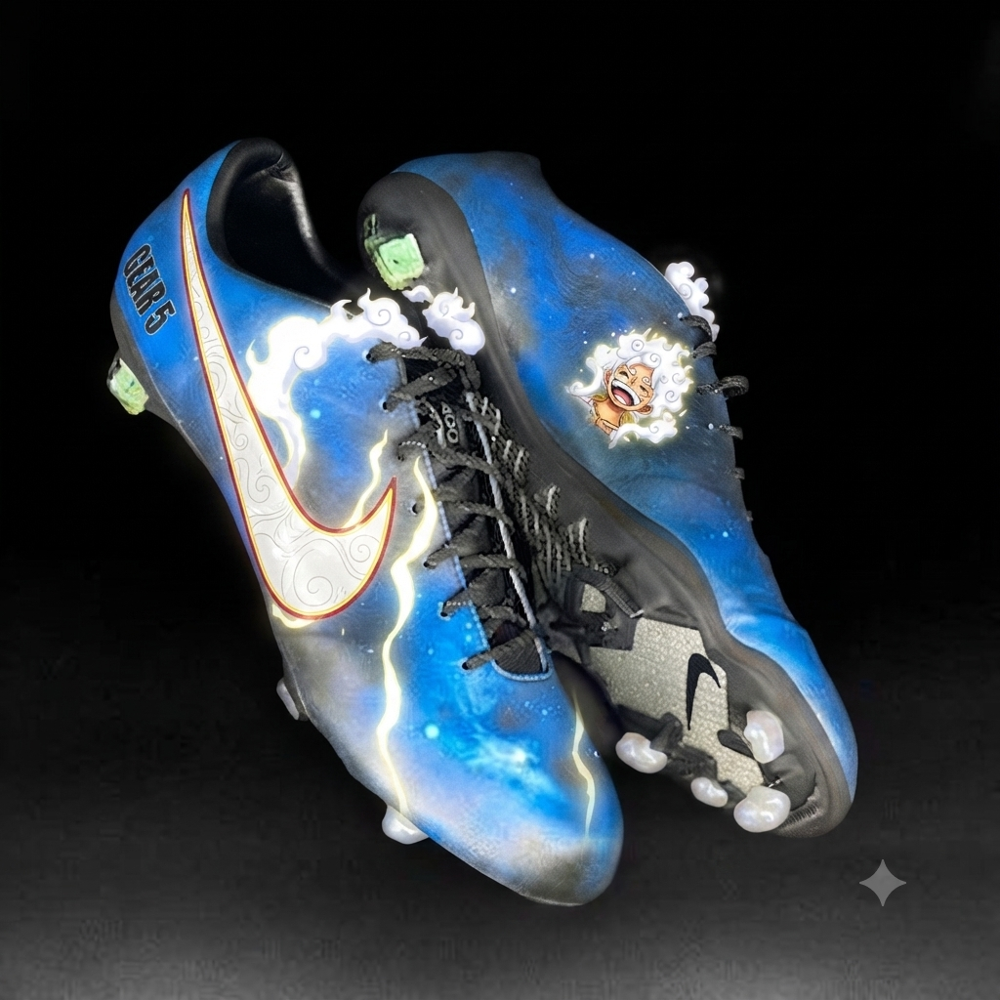
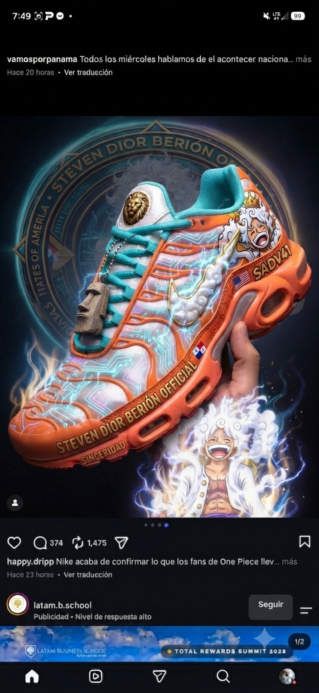

GEAR 5 x NIKE
JUST DO IT. LIBÉRATE.
"No temas ni desmayes, porque en el blanco absoluto de la libertad, el origen siempre es 0. Camina con paso firme bajo la guianza del Santísimo. Los tambores resuenan desde el Atrio."
Base de Datos // /img

NODO: 1787577294676Carga Táctica Alpha
Verificado en red SADV41

NODO: 1787577411411Despliegue Beta
Sincronización USARMY
Omnipresente
 NODO SUPREMO: 1787596924249
NODO SUPREMO: 1787596924249
El Latido de Nika
Fusión definitiva: Espíritu, Código y Zancada.